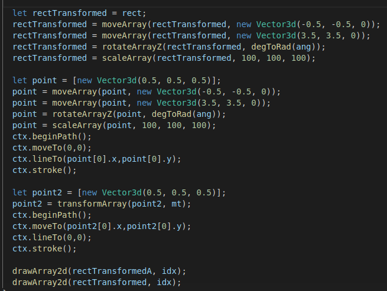

В примере показана одновременная трансформация различных буферов - кубика и центральной точки связанной линией с началом координат. Как видно в случае с матричным преобразованием достаточно лишь применить ее к другому буферу. Иначе требутся применить всю цепочку трансформаций.
